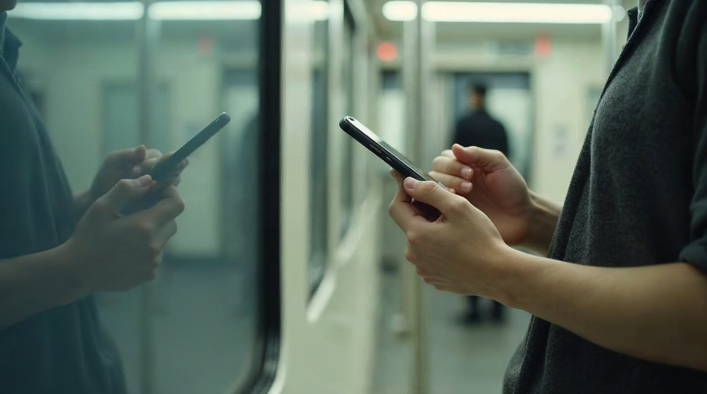
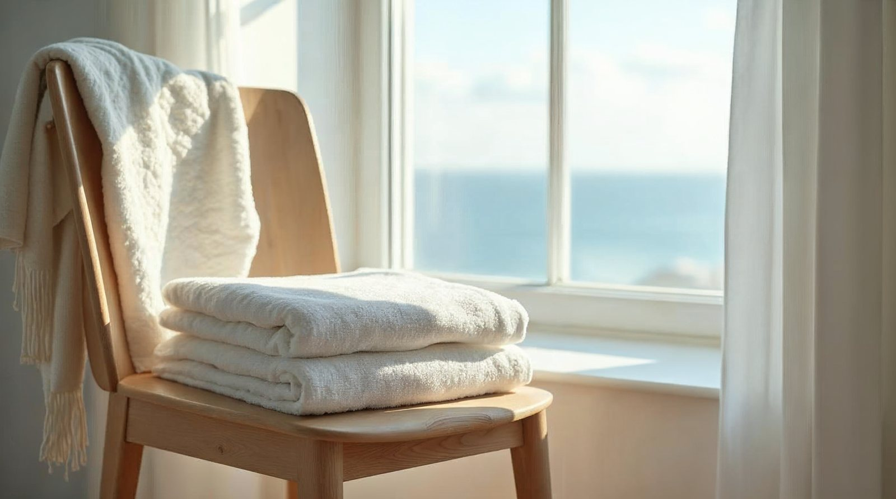

이종호 한의사 감수좋은꿈참사랑한의원 대표원장 (한의사 면허번호 19769)발행 2026-11-24 · 수정 2026-11-26
이 글의 차례
- 왜 이런 불편이 생길 수 있나요
- 왜 고개를 조금만 숙여도 목이 이렇게 지칠까요
- 먼저 이렇게 여쭙니다
- 일상에서 먼저 해 볼 수 있는 것
- 상황별 예시
- 스스로 점검해 보세요
- 비슷한 불편과 어떻게 구분하나요?
- 출퇴근 한 번, 이렇게 나눠 보세요
- 한의원에서 함께 살필 수 있는 경우
- 목과 어깨를 위한 가벼운 동작은 어떻게 하나요?
- 책상과 잠자리도 함께 살펴봅니다
- 진료를 받는 동안에는 어떻게 지내면 좋을까요?
- 두통과 눈 피로가 함께 올 때는 어떻게 하나요?
- 첫 진료 전에 무엇을 준비하면 좋을까요?
- 얼마나 지켜보고 언제 상담할까요
- 이렇게 기록해 오시면 상담이 쉬워집니다
- 다시 굳지 않으려면 무엇을 챙길까요?
- 이런 증상은 먼저 확인이 필요합니다
- 관련 글
지하철에서 서서 고개를 숙이고 휴대폰을 오래 보면 목 뒤와 한쪽 어깨에 긴장이 쌓이기 쉬워, 화면을 눈높이로 올리고 한 정거장마다 어깨를 풀어 주는 습관부터 권합니다. 7호선 상도역에서 출퇴근하며 손잡이를 잡은 채 한 손으로 휴대폰을 보다가 내릴 때쯤 목이 뻣뻣해진다는 분이 많습니다.
출퇴근 시간 자체를 줄이기는 어려워도 화면을 보는 높이, 손잡이를 잡는 손, 가방을 메는 쪽처럼 지하철 안에서 바꿀 수 있는 습관은 생각보다 많습니다.
왜 이런 불편이 생길 수 있나요
- 고개를 숙일수록 목 뒤 근육이 머리 무게를 더 오래 버텨야 합니다.
- 흔들리는 차 안에서 균형을 잡으려고 한쪽 손잡이를 잡으면 한쪽 어깨에 힘이 더 들어갑니다.
- 서서 가는 동안 다리와 허리도 흔들림에 버티느라 긴장해 목과 어깨의 힘이 잘 빠지지 않습니다.
- 가방을 늘 같은 쪽으로 메면 좌우 균형이 무너지기 쉽습니다.
- 겨울에는 추위에 어깨를 움츠린 채 걸어와 지하철에 타게 되어, 이미 굳은 상태로 출근길이 시작되기 쉽습니다.
- 출퇴근 뒤에도 책상에서 같은 자세가 이어지면 하루 종일 쉬지 못합니다.
왜 고개를 조금만 숙여도 목이 이렇게 지칠까요
머리는 생각보다 무거워서, 고개를 앞으로 숙일수록 목 뒤 근육이 그 무게를 붙잡고 버티는 힘이 커집니다. 서 있는 지하철에서는 여기에 흔들림까지 더해져 목과 어깨가 쉴 틈이 없습니다.
한 손으로 휴대폰을 들고 화면을 내려다보면 어깨가 안으로 말리고 가슴 앞쪽이 짧아집니다. 이 자세가 굳으면 고개를 들어도 어깨가 다시 앞으로 끌려가는 느낌이 들 수 있습니다.
화면에 집중하면 숨이 얕아지고 어깨가 저절로 올라가기도 합니다. 그래서 목만 풀기보다 숨과 어깨 높이를 함께 보는 것이 도움이 됩니다.
먼저 이렇게 여쭙니다
- 출퇴근에 지하철을 하루 몇 분 정도 타시나요?
- 이동 중에 휴대폰을 어느 손으로, 어떤 높이에서 보시나요?
- 고개를 돌리거나 뒤로 젖힐 때 불편한 방향이 있나요?
- 오후에 두통이나 눈 피로가 함께 오나요?
- 가방은 주로 어느 쪽으로 메시나요?
- 베개 높이와 자는 자세는 어떤가요?
- 다시 오신 분께는 지난번 이후 휴대폰 보는 높이를 바꿔 보셨는지부터 이어서 여쭙니다.
일상에서 먼저 해 볼 수 있는 것
- 휴대폰을 눈높이 가까이 올리고, 팔이 힘들면 화면 보는 시간 줄이기
- 한 정거장마다 어깨를 한 번 으쓱 올렸다 툭 내리기
- 손잡이 잡는 손과 가방 드는 쪽을 번갈아 바꾸기
- 백팩은 양쪽 끈을 모두 메고, 무거운 짐은 발밑에 내려두기
- 몇 정거장은 화면 대신 눈을 감고 쉬거나 이어폰으로 듣는 콘텐츠로 바꾸기
- 회사에 도착하면 앉기 전에 턱을 살짝 당기고 어깨를 뒤로 크게 다섯 번 돌리기
- 퇴근 후 따뜻한 물로 샤워하며 목과 어깨 풀어 주기

상황별 예시
- 예를 들어 왕복 한 시간 넘게 서서 가며 휴대폰으로 뉴스와 메일을 확인하는 직장인의 경우, 회사에 도착하기 전부터 목이 뻣뻣하고 오후에는 뒷머리가 무거울 수 있습니다. 출근길 절반은 화면 대신 귀로 듣는 시간으로 바꾸고, 회사 모니터 높이도 함께 점검해 볼 수 있습니다.
- 예를 들어 학원이나 학교로 오가며 지하철에서 강의 영상을 보는 수험생이나 대학생의 경우, 이동 시간까지 공부 시간으로 쓰다 보니 하루 종일 고개를 숙이게 됩니다. 이동 중에는 눈높이로 들기 쉬운 짧은 암기 카드로 바꾸는 방법도 있습니다.
- 예를 들어 퇴근길에 한 손으로 손잡이를, 다른 손으로 휴대폰과 무거운 가방을 함께 드는 경우, 가방 쪽 어깨만 올라가 저녁에 한쪽 어깨가 유독 결릴 수 있어 가방 드는 쪽을 몇 정거장마다 바꿔 보시길 권합니다.
스스로 점검해 보세요
- 지하철에서 내릴 즈음 목 뒤가 뻣뻣하다
- 거울을 보면 한쪽 어깨가 더 올라가 있다
- 고개를 한쪽으로 돌릴 때만 당긴다
- 오후가 되면 뒷머리가 무겁거나 눈이 침침하다
- 가방을 늘 같은 쪽으로 멘다
해당하는 항목이 있다면 이동 중 습관부터 바꿔 볼 신호입니다.
비슷한 불편과 어떻게 구분하나요?
목과 어깨가 굳는 느낌이라도 함께 오는 증상에 따라 살피는 방향이 달라집니다.
- 목 뒤와 어깨 위가 넓게 뻐근하고 쉬거나 따뜻하게 하면 덜하다면, 오래 같은 자세로 버틴 근육의 긴장 쪽을 먼저 생각합니다.
- 아침에 일어나 한쪽으로 고개가 돌아가지 않는다면, 자는 자세와 베개 높이를 함께 확인합니다.
- 목에서 어깨, 팔, 손가락까지 저림이 이어지고 고개를 젖힐 때 심해진다면, 목에서 팔로 가는 신경 쪽을 살핍니다.
- 뒷머리가 조이듯 아프고 오후로 갈수록 심해진다면, 목과 어깨의 긴장에서 오는 두통인지 함께 봅니다.
어느 쪽인지 스스로 나누기 어렵더라도, 저림이 어디까지 내려가는지와 고개를 어느 방향으로 움직일 때 불편한지만 기억해 오시면 충분합니다.
출퇴근 한 번, 이렇게 나눠 보세요
출퇴근 시간을 한 덩어리로 보지 말고 몇 구간으로 나눠 습관을 정해 두면 지키기 쉽습니다.
- 역까지 걸어가는 동안에는 휴대폰을 주머니에 넣고 어깨를 내린 채 걷습니다.
- 타고 나서 처음 몇 정거장은 손잡이를 잡고 눈을 쉬거나 귀로 듣는 콘텐츠를 켭니다.
- 화면을 봐야 할 때는 팔꿈치를 몸에 붙여 휴대폰을 가슴 위로 올리고, 고개 대신 눈만 아래로 내립니다.
- 갈아타거나 내리기 전에는 숨을 길게 내쉬며 어깨 힘을 한 번 빼 줍니다.
- 회사 자리에 앉기 전 모니터 높이와 의자 등받이를 한 번 확인합니다.
한의원에서 함께 살필 수 있는 경우
- 목과 어깨 뻣뻣함이 매일 반복되는 경우 자세와 척추·근육의 균형을 함께 살핍니다.
- 한쪽 어깨만 올라가고 불편한 경우 일상 습관과 함께 좌우 균형을 살핍니다.
- 두통이나 잠의 질 저하가 함께 있는 경우 생활 리듬도 이어서 여쭙니다.
좋은꿈참사랑한의원에서는 첫 방문 때 맥부터 짚으면서 출퇴근 시간과 휴대폰·책상 자세, 불편한 방향을 여쭙습니다. 그 뒤 목을 돌리고 젖히고 숙이는 움직임과 좌우 어깨 높이, 등과 골반의 기울기를 살피고, 팔 저림이 있다면 감각과 힘도 확인합니다.
필요하다고 판단될 때 추나와 침·약침 등을 상태에 맞춰 정하고, 근육 상태를 더 보아야 할 때는 초음파를 함께 쓰기도 합니다. 귀가 전에는 이동 중과 책상에서 할 수 있는 동작을 알려 드리고, 다음 방문 때 같은 동작으로 다시 확인합니다.
상도역 3번 출구에서 약 200m 직진한 뒤 오거리에서 우회전해 약 200m 오시면 되고, 진료 시간은 평일 09:30~20:00(점심 13:00~14:00), 토·일·공휴일 09:30~15:00입니다.
목과 어깨를 위한 가벼운 동작은 어떻게 하나요?
의자에 앉아 턱을 살짝 당겨 뒷목이 길어지는 느낌을 5초쯤 유지했다 풀어 주세요. 고개를 뒤로 젖히기보다 턱을 수평으로 당긴다는 느낌이 중요합니다.
어깨를 귀 쪽으로 으쓱 올렸다가 숨을 내쉬며 툭 떨어뜨리기를 다섯 번 해 봅니다. 어깨가 저절로 올라가 있던 것을 알아차리는 데도 도움이 됩니다.
양손을 등 뒤로 깍지 끼고 가슴을 천천히 열어 줍니다. 어느 동작이든 저림이 생기거나 아프면 멈추고 진료 때 말씀해 주세요. 목이나 어깨를 수술한 적이 있다면 담당 병원에서 허락한 범위 안에서 해 주세요.
책상과 잠자리도 함께 살펴봅니다
출퇴근길만 바꿔도 도움이 될 수 있지만, 회사에서 여덟 시간 넘게 앉아 있다면 책상 자세가 더 큰 몫을 차지할 수 있습니다. 모니터 윗부분이 눈높이에 오고, 키보드는 팔꿈치 높이에 두는 것이 기본입니다.
베개가 너무 높으면 밤새 고개가 앞으로 숙여진 채 자게 됩니다. 바로 누웠을 때 목 뒤가 편하게 받쳐지고, 옆으로 누웠을 때 머리가 어깨와 수평이 되는 높이를 찾아보세요.
퇴근 뒤 소파에 기대 휴대폰을 오래 보면 출퇴근길 자세가 그대로 이어집니다. 집에서는 휴대폰을 내려놓는 시간을 정해 두는 것도 방법입니다.
진료를 받는 동안에는 어떻게 지내면 좋을까요?
진료를 받는 동안에도 출퇴근은 매일 이어지니, 진료실에서 정한 습관 가운데 몇 가지만 골라 꾸준히 지켜 보세요. 지키기 어려웠던 것이 있으면 그대로 말씀해 주시면 출퇴근 길에 맞게 다시 고릅니다.
두통과 눈 피로가 함께 올 때는 어떻게 하나요?
목과 어깨가 굳으면 뒷머리가 무겁거나 눈이 침침해지는 일이 함께 오기도 합니다. 작은 화면을 오래 보면 눈의 초점을 맞추는 근육도 지쳐, 목의 긴장과 서로를 부추기기 쉽습니다.
지하철에서 화면을 볼 때는 글씨 크기를 키우고 화면 밝기를 주변에 맞춰 주세요. 20분쯤 보았다면 차 안 먼 곳을 잠깐 바라보거나 눈을 감아 쉬게 합니다.
두통이 오는 날과 휴대폰을 오래 본 날, 잠이 부족했던 날이 겹치는지 함께 적어 두면 진료 때 흐름을 보기 쉽습니다.
첫 진료 전에 무엇을 준비하면 좋을까요?
평소 메는 가방을 들고 오시면 무게와 메는 방식을 함께 볼 수 있습니다. 회사 책상과 모니터 사진이 있다면 자세를 살피는 데 도움이 됩니다.
진료 때 목과 어깨, 등을 살피기 때문에 목 부분이 넉넉하고 팔을 움직이기 편한 옷이 좋습니다.
두통으로 드시는 진통제가 있다면 이름과 한 달에 드신 횟수를 적어 오세요. 팔 저림이 있다면 어느 손가락까지 저린지도 적어 두시면 좋습니다.
목과 어깨 말고 허리나 무릎도 출퇴근 뒤에 불편하다면 함께 말씀해 주세요. 흔들리는 차 안에서 서서 버티는 자세 전체를 한 번에 살펴볼 수 있습니다.
출퇴근 경로가 바뀌었거나 이사로 이동 시간이 늘어난 시기가 있다면 그 무렵도 함께 알려 주세요.

얼마나 지켜보고 언제 상담할까요
- 이동 중 습관을 바꾼 뒤 1~2주 지켜보며 내릴 때의 뻣뻣함이 어떻게 달라지는지 보세요.
- 2~3주가 지나도 같은 방향으로 고개 돌리기가 불편하거나 두통이 일주일에 여러 번 온다면 상담을 권합니다.
- 아침에 일어날 때부터 고개가 잘 돌아가지 않는 날이 잦아지면 일찍 상담해 보세요.
이렇게 기록해 오시면 상담이 쉬워집니다
- 하루 지하철 이용 시간
- 휴대폰 화면 사용 시간(휴대폰 설정의 사용 시간 기록을 참고)
- 불편한 방향(돌리기, 젖히기, 숙이기)
- 두통·눈 피로가 오는 시간대
- 가방을 메는 쪽과 무게
기록은 짧게 적어도 됩니다. 예를 들어 '화요일, 지하철 40분, 화면 25분, 내릴 때 목 뻣뻣 5점, 오른쪽으로 돌릴 때 당김'처럼 적으면 습관을 바꾼 뒤의 차이가 잘 보입니다.
다시 굳지 않으려면 무엇을 챙길까요?
뻣뻣함이 줄어들면 다시 예전처럼 고개를 숙이고 보기 쉬운데, 그러면 비슷한 무렵에 다시 굳는 일이 많습니다. 바꾼 습관은 편해진 뒤에도 몇 주는 이어 가 보세요.
등 가운데를 펴 주는 동작이 목을 편하게 하는 데 도움이 될 때가 많습니다. 의자에 앉아 양손을 머리 뒤에 대고 가슴을 천천히 여는 정도로 시작하고, 아프면 멈추세요.
잠이 부족하면 목과 어깨의 긴장도 잘 풀리지 않습니다. 출퇴근 습관과 함께 잠자리에 드는 시각도 함께 살펴보시길 권합니다.
매일 타는 지하철을 바꿀 수는 없어도, 그 안에서 고개를 드는 시간은 조금씩 늘릴 수 있습니다. 다음에 오시면 지하철에서 내릴 때쯤 목이 어땠는지부터 여쭙겠습니다.
이런 증상은 먼저 확인이 필요합니다
- 팔이나 손에 힘이 빠지거나, 저림이 팔·손가락까지 점점 넓어지는 경우
- 열이 나면서 고개를 앞으로 숙이기 어려울 만큼 목이 뻣뻣한 경우
이런 신호가 있으면 한의원보다 가까운 병원이나 응급실을 먼저 찾으세요.
관련 글

여쭙는 것
- 출퇴근에 지하철을 하루 몇 분 정도 타시나요?
- 이동 중에 휴대폰을 어느 손으로, 어떤 높이에서 보시나요?
- 고개를 돌리거나 뒤로 젖힐 때 불편한 방향이 있나요?
생활에서 해 볼 것
- 휴대폰을 눈높이 가까이 올리고, 팔이 힘들면 화면 보는 시간 줄이기
- 한 정거장마다 어깨를 한 번 으쓱 올렸다 툭 내리기
- 손잡이 잡는 손과 가방 드는 쪽을 번갈아 바꾸기
한의원에서 함께 살필 것
- 목과 어깨 뻣뻣함이 매일 반복되는 경우 자세와 척추·근육의 균형을 함께 살핍니다.
- 한쪽 어깨만 올라가고 불편한 경우 일상 습관과 함께 좌우 균형을 살핍니다.
- 두통이나 잠의 질 저하가 함께 있는 경우 생활 리듬도 이어서 여쭙니다.
먼저 확인이 필요한 신호
- 팔이나 손에 힘이 빠지거나, 저림이 팔·손가락까지 점점 넓어지는 경우
- 열이 나면서 고개를 앞으로 숙이기 어려울 만큼 목이 뻣뻣한 경우
한눈에 보는 표
| 구분 | 핵심 |
|---|---|
| 여쭙는 것 | 출퇴근에 지하철을 하루 몇 분 정도 타시나요? 이동 중에 휴대폰을 어느 손으로, 어떤 높이에서 보시나요? |
| 생활에서 해 볼 것 | 휴대폰을 눈높이 가까이 올리고, 팔이 힘들면 화면 보는 시간 줄이기 한 정거장마다 어깨를 한 번 으쓱 올렸다 툭 내리기 |
| 한의원에서 함께 살필 것 | 목과 어깨 뻣뻣함이 매일 반복되는 경우 자세와 척추·근육의 균형을 함께 살핍니다. 한쪽 어깨만 올라가고 불편한 경우 일상 습관과 함께 좌우 균형을 살핍니다. |
| 먼저 확인이 필요한 신호 | 팔이나 손에 힘이 빠지거나, 저림이 팔·손가락까지 점점 넓어지는 경우 열이 나면서 고개를 앞으로 숙이기 어려울 만큼 목이 뻣뻣한 경우 |
자주 묻는 질문
추나를 받으면 자세가 바로 바뀌나요?
한 번에 바뀐다고 말하기는 어렵습니다. 진료와 함께 출퇴근 습관을 바꾸는 것이 중요해 함께 계획을 세웁니다.
목 베개나 자세 보조 밴드가 도움이 되나요?
사람마다 맞는 정도가 다릅니다. 쓰고 나서 더 불편하면 멈추고 진료 때 이야기해 주세요.
추나는 아프지 않나요?
힘의 세기와 방향을 몸 상태에 맞춰 조절하며, 불편하면 바로 말씀해 주시면 멈추거나 바꿉니다.
목을 꺾어 소리를 내면 시원한데 괜찮나요?
일부러 세게 꺾어 소리를 내는 습관은 목에 부담이 될 수 있습니다. 어깨를 으쓱했다 내리거나 천천히 고개를 돌리는 정도로 하고, 계속 뻑뻑하면 진료 때 이야기해 주세요.
좋은꿈참사랑한의원은 재진 때 지난번 이야기부터 이어서 여쭙니다. 진료시간과 예약은 오시는 길에서 확인하세요.
어디서 상담받을 수 있나요?
좋은꿈참사랑한의원은 서울 동작구 만양로2길 2 신성빌딩 3층·5층(서울 동작구 상도동, 7호선 상도역 3번 출구 근처)에 있습니다. 한의사 3명(이종호 대표원장, 조영기 수석진료원장, 정원영 진료원장)이 진료합니다. 진료시간은 평일 09:30~20:00(점심 13:00~14:00), 토·일·공휴일 09:30~15:00이며, 방문 전 전화로 확인을 권합니다. 예약은 네이버 예약, 카카오톡 상담, 전화 02-815-7510로 받습니다.
이 글은 일반적인 건강 정보이며 개인의 진단이나 치료를 대신하지 않습니다. 증상이 있거나 복용 중인 약이 있다면 진료를 통해 확인하세요. 치료 효과는 개인마다 다를 수 있습니다.
작성 기준: 일반적으로 알려져 있는 건강 정보를 참고해 정리했습니다(대표원장 감수). 증상 기록은 1~2주 동안 하루 1회, 비슷한 시간에 적어 오시면 지난 상태와 비교하기 쉽습니다.